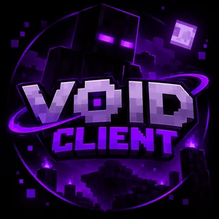
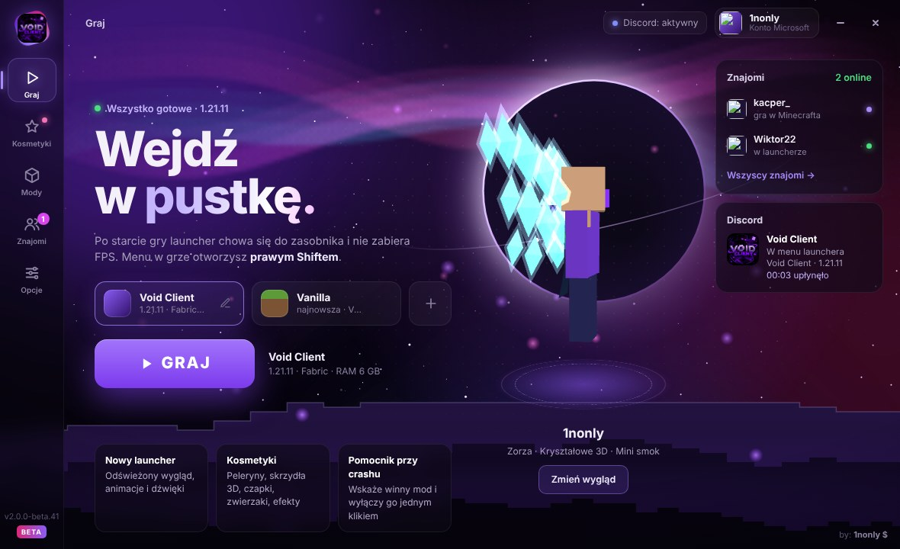
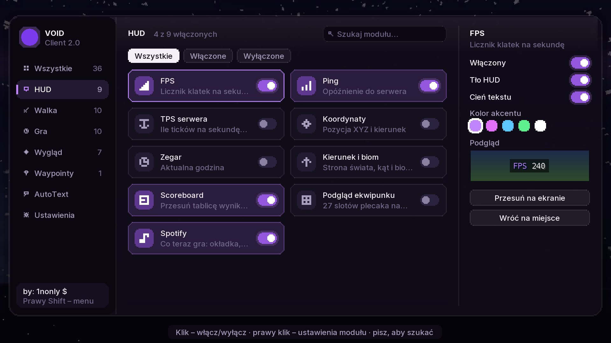

VOID CLIENTDarmowy launcher do Minecrafta z nowym menu w grze, kosmetykami widocznymi dla znajomych, Spotify na ekranie i trybem pod maksymalne FPS.
Windows 10 / 11 · 64-bit · aktualizuje się sam

Peleryny, skrzydła 3D, czapki, zwierzaki, efekty i emotki. Zakładasz je w launcherze – zapisują się same.
Teraz: –
VoidClient-Setup.exe – zawsze najnowsza wersja.
„Nieznany wydawca”? Więcej informacji → Uruchom mimo to.
Konto Microsoft z kupionym Minecraftem. Java pobierze się sama.
Tak, razem z kosmetykami. Potrzebujesz tylko konta Microsoft z kupionym Minecraft: Java Edition.
Void Client nie ma cheatów – tylko moduły takie jak w innych znanych klientach. Kosmetyki widzą tylko gracze z Void Client.
Launcher odczytuje, co gra na komputerze (Spotify albo inny odtwarzacz). Bez logowania i bez Premium.
Nie – tryb Maks. FPS zwykle daje więcej klatek niż czysta gra, a launcher chowa się do zasobnika.
Uruchom ją z launchera jeszcze raz. Pomocnik przy crashu pokaże, który mod jest winny, i wyłączy go jednym kliknięciem.